Released on May 28, 2009
(Next Release on June 3, 2009)
Renewable Fuels Changes to EIA's Petroleum Surveys
EIA has recently implemented expanded data collection efforts to better capture ethanol, biodiesel, and other renewable liquid fuel volumes, marking an important milestone in a multi-year effort to address the growing role of renewable fuels. Congress enacted a mandate for the increased use of renewable motor fuels in the Energy Policy Act of 2005. That same law also authorized EIA to collect better data on renewable fuels. The need for better renewable fuels data became even more important when the mandate for renewable fuel use was significantly expanded by the Energy Independence and Security Act of 2007, which sets a target of 36 billion gallons of renewable fuel use by 2022.
In response to these developments, EIA requested, and was provided with, funding to improve its renewable fuels data collections. Following a redesign of our existing survey forms, and the creation of some new ones, the first phase of this project was completed in early 2009 with changes to the Petroleum Supply Monthly (PSM). The March PSM featuring January 2009 data, adds renewable fuels, displays fuel ethanol supply and demand, and incorporates ethanol production into supply and disposition tables.
Formerly, production and inventory data for fuel ethanol (and methyl tertiary butyl ether or MTBE) were published in Appendix D of the PSM and available only as U.S. totals. Going forward, the production and inventory data previously found in Appendix D will be incorporated into Tables 1 through 24 of the PSM and will be available as both U.S. and Petroleum Administration for Defense District (PADD) level totals. Additionally, implied net receipts of fuel ethanol (the sum of the stock change, refinery and blender net inputs, and exports minus the sum of net production, imports, and adjustments) have been added to the PADD-level supply and disposition tables (5 through 24).
This year’s published data also include modifications to the product supplied and adjustment calculations. As explained in a previous edition of This Week in Petroleum, reported net inputs of gasoline blending components, fuel ethanol, and certain other liquids should correspond to the reported finished motor gasoline production data, and, in turn, product supplied (the implied demand) for blending components and fuel ethanol should equal zero. However, unreported blending activity caused by incomplete blending terminal coverage and inconsistent product classifications by respondents often led to positive product supplied numbers. In the past, EIA has reported this positive product supplied as the finished gasoline “adjustment.” Going forward, EIA will report the fuel ethanol portion of the finished gasoline adjustment separately, and fuel ethanol adjustments allocated for each PADD will correspond proportionally to the amount of fuel ethanol blending that is reported by refineries and blenders in each PADD.
EIA is also featuring biodiesel for the first time on its surveys. Refinery Operations (tables 27-34), Stocks (table 54), and Movements (tables 56-59) include a row for “Renewable Diesel Fuel,” and the tables for Imports (36-47), Exports (48-51), and Net Imports (52,53) include three new products: “Biomass-Based Diesel Fuel” (includes biodiesel); “Other Renewable Diesel” (includes Renewable Diesel Fuel Coprocessed with Petroleum); and “Other Renewable Fuels” (includes Biojet). But biodiesel is produced outside the U.S. refinery system. EIA will soon launch a monthly survey of the biodiesel industry to capture this activity, the EIA-22M, “Monthly Biodiesel Production Survey.” Intended to comply with Section 1508 of the Energy Policy Act of 2005 and Section 503 of the Energy Policy Act of 1992, the survey will provide monthly information on biodiesel plant locations, production capacity, feedstock inputs, stocks, production, volumes of biodiesel and biodiesel blends sold for resale and to end users, and revenues associated with sales. The survey will also capture whether Federal tax credits for biodiesel blends are claimed by the producers or by downstream blenders.
In 2010 and 2011, EIA will be rolling out additional changes to its renewable fuels collection. In 2010, we will collect and publish weekly data on fuel ethanol production, imports, stocks, and inputs to gasoline blending. Gasoline adjustment calculations will be performed using weekly data. Current weekly gasoline adjustments are set equal to the last available gasoline adjustment value from the PSM. Calculation of weekly gasoline adjustments is expected to improve consistency of gasoline supply and disposition. In addition to fuel ethanol, EIA will add inventory data for total natural gas plant liquids and liquefied refinery gases, kerosene, and asphalt to weekly surveys. Product additions are intended to provide data to improve estimates of stocks of “other” oils.
The biggest change to the PSM in 2010 will be breaking out ethanol-blended gasoline into high-level and low-level blends. This product split will provide information on supplies of E85, which falls into the high-level blend category. The same product split will be added to weekly surveys.
In 2011, EIA will focus on fuel ethanol volumes transported by rail, allowing estimation of movements of fuel ethanol between regions and more complete coverage of ethanol inventories by capturing fuel ethanol inventories in transit by rail.
EIA believes that the ongoing changes to its renewable fuels data collection efforts will provide useful and timely information for consumers of EIA petroleum supply data.
Gasoline Price Shoots Up Almost 13 Cents
For the fourth week in a row the national average price for regular gasoline increased, jumping almost 13 cents to $2.44 per gallon. Despite the cumulative increase of nearly 39 cents over the past four weeks, the price was still $1.50 below the average of a year ago. Prices increased in all regions of the country. On the East Coast, the price increased a dime to $2.39 per gallon. The average price in the Midwest gained the most of any region, surging 17 cents to hit $2.47 per gallon. Although the average price on the Gulf Coast at $2.32 per gallon remained the lowest of any region, the price still rose by more than 10 cents. In the Rocky Mountains, the price shot up 12 cents to $2.36 per gallon. The price on the West Coast gained nearly 12 cents to $2.58 per gallon, surpassing the $2.50 mark for the first time since November 10, 2008. In California, the average price increased 11 cents to $2.64 per gallon.
The national average price of diesel fuel rose for the third consecutive week, gaining over four cents to $2.27 per gallon, $2.45 below last year. Prices in all regions of the country increased. On the East Coast, the price rose three cents to $2.31 per gallon. The largest increase occurred in the Midwest, where the price moved nearly six cents higher to $2.23 per gallon. The average price for the Gulf Coast rose three cents to $2.24 per gallon. The increase in the Rocky Mountains was also about three cents, taking the price to $2.30 per gallon. The West Coast price moved up more than four cents to $2.38, while the price in California rose to $2.41 per gallon.
Propane Build Remains Strong
Propane’s seasonal build remained strong last week with stockholders adding an additional 1.4 million barrels to the Nation’s primary supply propane. As of May 22, 2009, propane inventories stood at an estimated 49.4 million barrels. Most of the weekly gains occurred in the East Coast and Midwest regions which reported respective increases of 0.4 million barrels and 0.8 million barrels. To a lesser extent, the combined Rocky Mountain/West Coast region reported a 0.1 million-barrel gain. In contrast, the Gulf Coast region remained relatively unchanged during this same time. Propylene non-fuel use inventories also remained unchanged last week, although its share to total propane/propylene inventories inched slightly lower to 4.8 percent from 5.0 percent from the prior week.
Text from the previous editions of “This Week In Petroleum” is now accessible through a link at the top right-hand corner of this page.
| Retail Prices (Cents Per Gallon) | |||||||
| 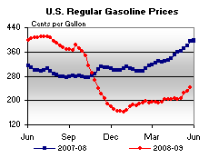 | 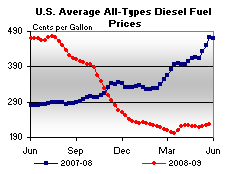 | ||||||
| Retail Data | Changes From | Retail Data | Changes From | ||||
| 05/25/09 | Week | Year | 05/25/09 | Week | Year | ||
| Gasoline | 243.5 | Diesel Fuel | 227.4 | ||||
| Spot Prices (Cents Per Gallon*) | |||||||||||||||||||||||||||||||||||
| 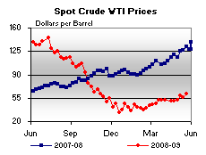 | 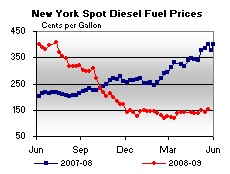 | ||||||||||||||||||||||||||||||||||
| 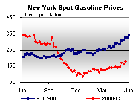 | 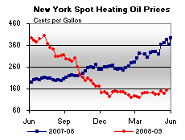 | ||||||||||||||||||||||||||||||||||
|
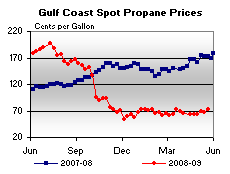 | ||||||||||||||||||||||||||||||||||
| *Note: Crude Oil WTI Price in Dollars per Barrel. | |||||||||||||||||||||||||||||||||||
| Stocks (Million Barrels) | |||||||
| 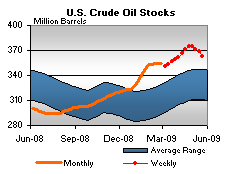 | 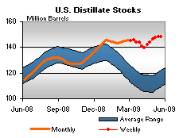 | ||||||
| 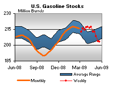 | 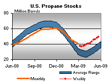 | ||||||
| Stocks Data | Changes From | Stocks Data | Changes From | ||||
| 05/22/09 | Week | Year | 05/22/09 | Week | Year | ||
| Crude Oil | 363.1 | Distillate | 148.4 | ||||
| Gasoline | 203.4 | Propane | 49.352 | ||||